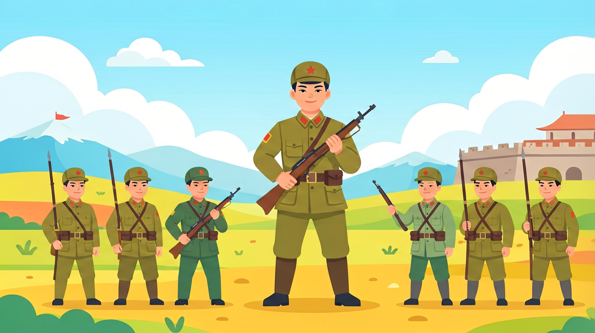
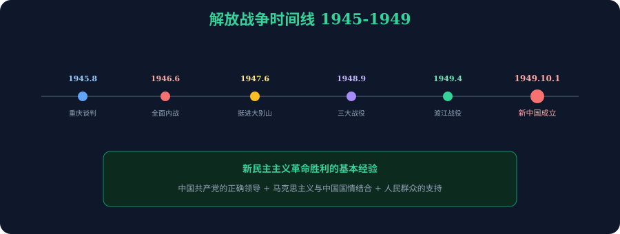

🧭 带着问题学
❓ 为什么国民党明明有美国支持还打不过共产党？
❓ 三大战役里哪个对胜负影响最大？
❓ 课本说‘得民心者得天下’，具体怎么体现的？
学完这一课，这些问题你都能自信地回答。

核心概念
重庆谈判
1945年8—10月，毛泽东赴重庆与蒋介石谈判，签订《双十协定》，中共争取和平
双十协定
1945年10月10日签订，确定和平建国方针，但国民党随后背弃承诺
全面内战爆发
1946年6月，国民党进攻中原解放区，标志全面内战开始
挺进大别山
1947年，刘邓大军千里跃进大别山，揭开战略反攻序幕
三大战役
辽沈、淮海、平津战役，共歼敌154万，国民党主力基本被消灭
渡江战役
1949年4月，百万雄师渡长江，解放南京，国民政府覆灭
学习目标
- 知道重庆谈判的经过、双十协定的内容，理解中国共产党为争取和平所做的努力
- 理解战略防御阶段到战略反攻的转变，掌握刘邓大军挺进大别山的历史意义
- 掌握辽沈、淮海、平津三大战役的时间、地点、指挥者和歼敌数量
- 认识新民主主义革命胜利的历史意义和基本经验，理解"没有共产党就没有新中国"
前测·三题热身
先测一测你对抗日战争基础知识的掌握程度。
中国抗日战争正式胜利的标志是什么？
全民族抗战开始的标志是什么？
抗战期间，中国共产党领导敌后战场的主要依托是什么？
模块一 · 重庆谈判与内战爆发
1945年抗战胜利，中国人民盼望和平已久。然而，两种不同的中国前途摆在面前：一是和平民主的新中国，一是独裁内战的旧中国。因此，中国共产党接受邀请，毛泽东亲赴重庆谈判，以实际行动争取和平，揭开了解放战争的序幕。
抗战胜利后，蒋介石三次电邀毛泽东赴重庆谈判。毛泽东为了争取和平、揭露国民党阴谋，毅然前往重庆。
经过43天谈判，国共双方签订《双十协定》，确定了和平建国的基本方针，同意避免内战，召开政治协商会议。
政治协商会议在重庆召开，通过了有利于人民的协议。但国民党随后撕毁协定，拒绝执行协议内容。
国民党军队大举进攻中原解放区，全面内战爆发。国共两党的和平谈判彻底破裂。
中国共产党通过参加谈判，充分揭露了国民党假和平、真内战的阴谋，在政治上取得了主动权，赢得了人民群众的广泛支持。同时，《双十协定》的签订也表明国民党在政治上已陷入被动。
毛泽东赴重庆谈判的根本目的是什么？
🗺️ 解放战争 1946-1949
点击时代按钮切换疆域版图；悬停高亮边界；点击红色城市标记查看详情。
模块二 · 战略防御与战略反攻
内战初期，国民党凭借800万军队和美国援助，气焰嚣张。然而，人民解放军凭借灵活机动的战略战术和人民群众的支持，粉碎了国民党的全面进攻，转而在1947年以一支孤军千里跃进大别山，因此从根本上扭转了战场局势，揭开了战略反攻的序幕。
内战初期，国民党军队约430万人，而人民解放军约120万人，敌强我弱。
人民解放军采取积极防御策略：以歼灭敌人有生力量为主要目标，不以保守地方为目的，以运动战为主要作战形式。
1946年至1947年上半年，人民解放军共歼敌112万人，粉碎了国民党的全面进攻和重点进攻。
1947年6月，刘伯承、邓小平率领晋冀鲁豫野战军主力，千里跃进大别山。
大别山位于湖北、安徽、河南三省交界处，直接威胁南京和武汉，像一把"尖刀"插入国民党统治区心脏。
这一行动揭开了人民解放军战略反攻的序幕，战争形势开始向有利于人民解放军的方向转变。

刘邓大军挺进大别山的历史意义是什么？
模块三 · 三大战役
1948年秋，战争形势已发生根本转变，人民解放军的力量已超过国民党军队。然而，要彻底消灭国民党的战略力量，还需要进行几场大规模的歼灭战。因此，从1948年9月至1949年1月，人民解放军先后发动了辽沈、淮海、平津三大战役，歼敌154万，从根本上摧毁了国民党的主要军事力量。

| 战役 | 时间 | 地区 | 指挥者 | 歼敌 | 意义 |
|---|---|---|---|---|---|
| 辽沈战役 | 1948.9—11 | 东北地区 | 林彪、罗荣桓 | 47万 | 解放东北全境；解放军数量首次超过国民党 |
| 淮海战役 | 1948.11—1949.1 | 以徐州为中心 | 刘伯承、陈毅、邓小平等 | 55万 | 解放长江中下游以北地区；规模最大的战役 |
| 平津战役 | 1948.11—1949.1 | 华北地区 | 林彪、罗荣桓、聂荣臻 | 52万 | 华北全境解放；北平和平解放，保护了古都文化 |
三大战役共歼灭国民党军队154万人，国民党主力基本被消灭
点击柱状图可查看详细信息
三大战役中，歼敌人数最多的是哪场战役？
平津战役中，北平是如何解放的？
模块四 · 新民主主义革命胜利
三大战役后，国民党的主要军事力量被消灭。然而，蒋介石仍试图依托长江天堑重整旗鼓。因此，1949年4月，人民解放军百万雄师强渡长江，解放南京，宣告统治中国22年的国民政府覆灭，新民主主义革命取得了基本胜利，中华人民共和国宣告成立。
毛泽东、朱德发布《向全国进军的命令》，百万雄师强渡长江，突破国民党苦心经营的长江防线。
人民解放军解放南京，宣告统治中国22年的国民政府覆灭。
毛泽东在北京天安门城楼上向全世界宣告：中华人民共和国成立，"中国人民从此站起来了"。

动画包含：从谈判到内战 · 三大战役时间线 · 新民主主义革命的胜利
国内意义
结束了近代以来中国半殖民地半封建社会的历史，实现了中华民族的独立和人民的解放
国际意义
改变了世界政治格局，壮大了世界和平、民主和社会主义力量，鼓舞了被压迫民族的解放斗争
- 中国共产党的正确领导——最根本原因，党始终代表人民利益
- 马克思主义与中国实际相结合——形成了毛泽东思想，找到了正确的革命道路
- 人民群众的广泛支持——人民战争思想，"人民军队爱人民"
- 建立最广泛的统一战线——团结一切可以团结的力量
渡江战役后，人民解放军于1949年4月23日解放了哪座城市，宣告国民政府覆灭？
例题精讲
题目：下列关于解放战争时期三大战役的说法，正确的是（ ）
A. 辽沈战役的关键是攻克锦州，切断东北敌军的退路
B. 淮海战役后，人民解放军在数量上首次超过国民党军队
C. 平津战役中，北平经过激烈战斗被攻克
D. 三大战役中，渡江战役歼敌人数最多
✅ 答案：A
解题思路：
A项正确：辽沈战役的关键是先打锦州，"关门打狗"，切断东北敌军南逃和援军进入的通道。
B项错误：辽沈战役（非淮海）结束后，解放军数量首次超过国民党。
C项错误：北平是和平解放的，傅作义接受改编，避免了战争破坏。
D项错误：渡江战役不属于三大战役；三大战役中歼敌最多的是淮海战役（55万）。
材料："淮海战役的胜利，是人民群众用小车推出来的。"——陈毅
问题：结合材料，分析人民解放军能够取得解放战争胜利的原因。
✅ 参考答案要点
①人民群众的广泛支持：淮海战役中，华东、中原解放区共出动民工543万人，推小车88万辆运送物资，体现了人民战争的伟大力量。
②中国共产党的正确领导：党始终坚持为人民服务，深得人心。
③正确的战略战术：灵活机动，集中优势兵力各个歼灭敌人。
④国民党政权腐败失民心：国民党腐败专制，失去广大人民支持，是失败的根本原因。
记忆锚点
一战：挺进大别山（战略反攻转折点）
三战：辽沈（47万）+ 淮海（55万）+ 平津（52万）= 154万
渡江：百万雄师渡长江，解放南京，1949.10.1建国
易错提示（3条）
AI 学伴
🤖 有不懂的地方？
点击右下角 AI 学伴 提问，随时获得解答！
综合任务（3级）
完成一张"解放战争大事年表"，按时间顺序列出：重庆谈判、《双十协定》、政协会议、全面内战爆发、挺进大别山、三大战役（各战役时间、地点、结果）、渡江战役、南京解放、新中国成立。
以"为什么说解放战争的胜利是人民的选择？"为题，从军事、政治、经济三个角度，分析国民党失败和共产党胜利的原因，写一篇200字左右的短论文。
研究比较：毛泽东为什么要亲赴重庆谈判？谈判对共产党有什么利弊？结合史实，评价重庆谈判在解放战争中的历史地位，写一篇不少于300字的历史小论文，要有论点、论据和结论。
后测·五题测验
1945年，毛泽东赴重庆与蒋介石谈判，双方签订的协议是？
1947年，揭开人民解放军战略反攻序幕的军事行动是？
三大战役按时间顺序，正确的排列是？
1949年4月，人民解放军渡江战役后，解放了哪座城市，宣告国民政府灭亡？
新民主主义革命胜利的最根本原因是？
课程总结
解放战争（1946—1949年）是中国近现代史上决定性的历史时期。中国共产党领导人民解放军，经过战略防御（1946—1947）、战略反攻（1947年）和战略决战（1948—1949年）三个阶段，以辽沈、淮海、平津三大战役歼灭国民党主力154万人，最终以渡江战役推翻国民政府，建立了中华人民共和国。
解放战争的胜利，是历史的必然选择——国民党失民心，共产党得民心；腐败政权终将被推翻，代表人民的政党必将胜利。这场战争深刻证明了"得民心者得天下"的历史规律。